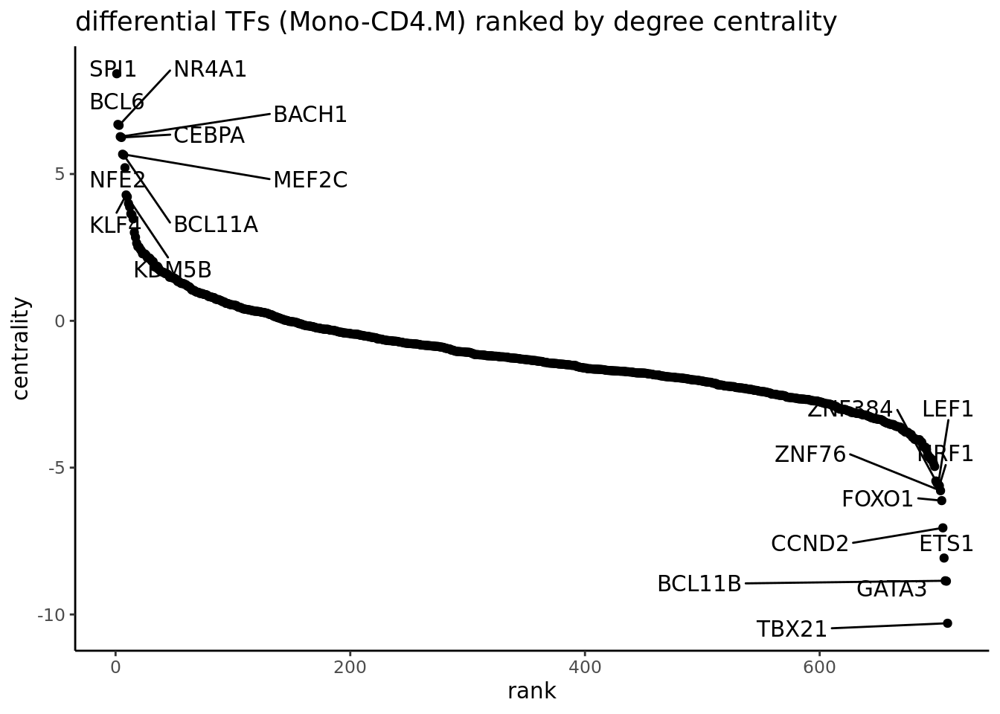

5 Finding patterns of transcription factor activity
The epiregulon.extra package provides tools for convenient downstream analysis of the transcription factor activity matrix. Users can easily identify transcription factors that differ in activity across cell groups, visualize these differences, construct differential graphs highlighting differences between cell groups in GRN topology, and find potential interaction partners by searching for transcription factors with overlapping regulons.
5.1 Differential TF activity test
We can next determine which TFs exhibit differential activities across cell clusters/groups via the findDifferentialActivity function. This function depends on findMarkers function from scran package.
##
## Attaching package: 'epiregulon.extra'## The following object is masked _by_ '.GlobalEnv':
##
## regulonmarkers <- findDifferentialActivity(activity_matrix = score.combine,
clusters = GeneExpressionMatrix$cell_type,
pval.type = "some",
direction = "up",
logvalues = FALSE)
markers## List of length 11
## names(11): B CD14+ Mono DC FCGR3A+ Mono ... NA Naive CD4+ T Naive CD8+ T NKgetSigGenes compiles the different test results into a single dataframe and enables user to supply their desired cutoffs for significance and variable to order by.
## Using a cutoff of 0.01 for class B for direction equal to any## Using a cutoff of 0.04 for class CD14+ Mono for direction equal to any## Using a cutoff of 0.018 for class DC for direction equal to any## Using a cutoff of 0.035 for class FCGR3A+ Mono for direction equal to any## Using a cutoff of 0.016 for class Memory CD4+ T for direction equal to any## Using a cutoff of 0.006 for class Memory CD8+ T for direction equal to any## Using a cutoff of 0.025 for class Monocytes for direction equal to any## Using a cutoff of 0.0093 for class NA for direction equal to any## Using a cutoff of 0.023 for class Naive CD4+ T for direction equal to any## Using a cutoff of 0.023 for class Naive CD8+ T for direction equal to any## Using a cutoff of 0.0089 for class NK for direction equal to any## p.value FDR summary.diff class tf
## 6 0.000000e+00 0.000000e+00 0.193325737 B CD74
## 37 0.000000e+00 0.000000e+00 0.100447985 B POU2AF1
## 17 0.000000e+00 0.000000e+00 0.039562050 B IRF8
## 22 0.000000e+00 0.000000e+00 0.120908613 CD14+ Mono MAML3
## 8 0.000000e+00 0.000000e+00 0.114698914 CD14+ Mono CREB5
## 41 0.000000e+00 0.000000e+00 0.099610316 CD14+ Mono SRSF9
## 38 1.128666e-114 2.778776e-112 0.018734362 DC RXRA
## 43 5.428903e-114 1.113830e-111 0.021602710 DC TCF7L2
## 52 1.236842e-112 1.903191e-110 0.030075002 DC ZFP36
## 21 0.000000e+00 0.000000e+00 0.080942070 FCGR3A+ Mono IRF8
## 9 0.000000e+00 0.000000e+00 0.078922634 FCGR3A+ Mono CREB5
## 61 0.000000e+00 0.000000e+00 0.077188563 FCGR3A+ Mono CD74
## 5 4.244677e-195 2.612599e-192 0.019021906 Memory CD4+ T MAF
## 10 5.182685e-134 5.799896e-132 0.041957212 Memory CD4+ T STAT4
## 1 2.465418e-132 2.529108e-130 0.055545225 Memory CD4+ T BCL11B
## 23 0.000000e+00 0.000000e+00 0.007724666 Memory CD8+ T TBX21
## 4 0.000000e+00 7.806237e-322 0.017725797 Memory CD8+ T EOMES
## 101 1.668341e-284 4.107457e-282 0.008820261 Memory CD8+ T LDB2
## 62 1.155957e-170 3.557458e-168 0.028284948 Monocytes BCL11A
## 60 1.088991e-159 1.340548e-157 0.028093577 Monocytes ZNF703
## 231 2.934533e-156 2.124947e-154 0.074502531 Monocytes IRF8
## 2 6.643574e-13 8.178239e-10 0.038336649 NA BCL11B
## 3 1.870194e-12 1.151105e-09 0.013042475 NA ETS1
## 51 7.780093e-12 3.192431e-09 0.023982082 NA LEF1
## 11 1.598013e-250 6.557181e-248 0.023665835 Naive CD4+ T LEF1
## 42 9.272474e-152 6.714362e-150 0.047429424 Naive CD4+ T STAT4
## 24 4.146310e-129 2.126712e-127 0.023443747 Naive CD4+ T NFATC2
## 12 9.053450e-262 1.857466e-259 0.024415366 Naive CD8+ T LEF1
## 44 6.883051e-146 3.258860e-144 0.047021830 Naive CD8+ T STAT4
## 26 1.456341e-101 3.382558e-100 0.046648772 Naive CD8+ T PRKCQ
## 16 4.467607e-251 5.499625e-248 0.028244464 NK EOMES
## 381 2.554555e-228 1.572329e-225 0.013529838 NK TBX21
## 25 1.349155e-226 5.536033e-224 0.022278908 NK LDB25.2 Visualizing TF activities
Epiregulon also provides the option for visualizing the inferred TF activities in reduced dimensions.
options(ggrastr.default.dpi=300)
tfs_interest <- c("BCL11B", "KLF4", "IRF8", "EBF1")
plotActivityDim(sce = GeneExpressionMatrix,
activity_matrix = score.combine[tfs_interest,],
tf = tfs_interest,
dimtype = "UMAP_RNA",
nrow=2,
ncol=2,
point_size=0.1,
rasterise = TRUE)
We can compare the activity with gene expression of the same TFs.
plotActivityDim(sce = GeneExpressionMatrix,
activity_matrix = assay(GeneExpressionMatrix, "normalizedCounts")[tfs_interest,],
tf = tfs_interest,
dimtype = "UMAP_RNA",
nrow=2,
ncol=2,
legend.label = "Gex",
colors = c("grey","blue"),
point_size=0.1,
rasterise = TRUE)We can also plot violin plot to visualize TF activity.
plotActivityViolin(activity_matrix = score.combine,
tf = tfs_interest,
clusters = GeneExpressionMatrix$cell_type,
legend.label = "Gex",
nrow=2,
ncol=2)We plot violin plot to visualize TF gene expression.
plotActivityViolin(activity_matrix = assay(GeneExpressionMatrix, "normalizedCounts")[tfs_interest,],
tf = tfs_interest,
clusters = GeneExpressionMatrix$cell_type,
nrow=2,
ncol=2,
legend.label = "gene expression")
We can visualize the different TFs in a bubble plot:
plotBubble(activity_matrix = score.combine,
tf = tfs_interest,
GeneExpressionMatrix$cell_type,
pval.type = "some",
direction = "up",
logvalues = FALSE)
We visualize the top differential TFs based on activity.
5.3 Geneset enrichment
Sometimes we are interested to know what pathways are enriched in the regulon of a particular TF. We can perform geneset enrichment using the enricher function from clusterProfiler.
Here we first download Hallmark and C2 signatures from hallmark and then perform gene set enrichment of the known lineage factors. As expected, EBF1 is consistent with a B cell lineage factor, GATA3 and RUNX3 with lymphoid lineage and SPI1 with myeloid lineage.
#retrieve genesets
H <- EnrichmentBrowser::getGenesets(org = "hsa",
db = "msigdb",
cat = "H",
gene.id.type = "SYMBOL" )
C2 <- EnrichmentBrowser::getGenesets(org = "hsa",
db = "msigdb",
cat = "C2",
gene.id.type = "SYMBOL" )
#combine genesets and convert genesets to be compatible with enricher
gs <- c(H, C2)
gs.list <- do.call(rbind,lapply(names(gs), function(x)
{data.frame(gs=x, genes=gs[[x]])}))
enrichresults <- regulonEnrich(TF = tfs_interest,
regulon = regulon.w,
weight = "weight",
weight_cutoff = 0,
genesets = gs.list)## BCL11B## ## KLF4## IRF8## EBF15.4 Differential Network analysis
In addition to looking at the summed TF activity, a second approach to investigate differential TF activity is to compare and contrast target genes or network topology. In this example, we know that EBF1 is a B cell lineage factor. If we plot the differential network of EBF1 using the regulon with cluster-specific weights, we can see that EBF1 has many more targets in B cells than it has in CD4 memory T cells.
plotDiffNetwork(regulon.w,
cutoff = 0,
tf = c("EBF1"),
weight = "weight",
clusters = c("Memory CD4+ T","B"),
layout = "stress")## Building graph using weight as edge weightsSometimes, we are interested to identify interaction partners of the TFs of interest. This can be achieved by comparing the overlap of the targets genes for all the TFs and identify the most similar TFs by Jaccard similarity. To illustrate this function, we take a look at the top most similar 20 TFs to EBF1, and we successfully identify PAX5 as the most similar TF. Both PAX5 and EBF1 are important factors for B cell development (https://www.nature.com/articles/ni.2641).
library(ggplot2)
# construct a graph of the preB cells
B_network <- buildGraph(regulon.w, weights = "weight", cluster="B")## Building graph using weight as edge weights# compute a similarity matrix of all TFs
similarity_score <- calculateJaccardSimilarity(B_network)
# Focus on EBF1
similarity_score_EBF1 <- similarity_score[, "EBF1"]
similarity_df <- data.frame(similarity = head(sort(similarity_score_EBF1,
decreasing = TRUE),20),
TF = names(head(sort(similarity_score_EBF1,
decreasing = TRUE),20)))
similarity_df$TF <- factor(similarity_df$TF, levels = rev(unique(similarity_df$TF)))
# plot top TFs most similar to EBF1
topTFplot <- ggplot(similarity_df, aes(x=TF, y=similarity)) +
geom_bar(stat="identity") +
coord_flip() +
ggtitle("EBF1 similarity") +
theme_classic()
print(topTFplot)In order to convince ourselves that our differential network is statistically significant, we permute the edges and obtain a background graph from averaging many iterations. Here, we plot the differential network graph subtracted by permuted graphs.
# create a permuted graph by rewiring the edges 100 times
permute_matrix <- permuteGraph(B_network, "EBF1", 100, p=1)
permute_matrix <- permute_matrix[names(similarity_score_EBF1),]
diff_matrix <- similarity_score_EBF1-rowMeans(permute_matrix)
diff_matrix_df <- data.frame(similarity = head(sort(diff_matrix,
decreasing = TRUE),20),
TF = names(head(sort(diff_matrix,
decreasing = TRUE),20)))
diff_matrix_df$TF <- factor(diff_matrix_df$TF, levels = rev(unique(diff_matrix_df$TF)))
# plot top TFs most similar to EBF1
topTFplot <- ggplot(diff_matrix_df, aes(x=TF, y=similarity)) +
geom_bar(stat="identity") +
coord_flip() +
ggtitle("background subtracted EBF1 similarity ") +
theme_classic()
print(topTFplot)
# obtain empirical p-values
p_matrix <- rowMeans(apply(permute_matrix, 2, function(x) {x > similarity_score_EBF1}))
p_matrix[names(head(sort(diff_matrix,decreasing = TRUE),20))]## PAX5 POU2F2 RELB BCL11A TCF4 NBN EED BCLAF1 MEF2A RUNX3
## 0 0 0 0 0 0 0 0 0 0
## TCF3 BHLHE40 MTA3 IRF4 MTA2 PML CHD2 TBL1XR1 BCOR KMT2D
## 0 0 0 0 0 0 0 0 0 0Next, we are interested to compare the networks of two cell types, in this case, CD4 memory T cells vs monocytes. We build an edge subtracted graph and then calculate the degree centrality of the subtracted graph. We normalize centrality using the default square root function. The top 5 most positive TFs represent lineage factors more active in monocytes whereas the bottom 5 TFs present lineage factors enriched in CD4. We successfully identified the myeloid factor SPI1 to be associated with monocytes and Th1 factor TBX21 to be associated with CD4 T cells.
# construct a graph of the CD4.M and NK cells respectively
CD4.M_network <- buildGraph(regulon.w, weights = "weight", cluster="Memory CD4+ T")## Building graph using weight as edge weights## Building graph using weight as edge weights# construct a difference graph
diff_graph <- buildDiffGraph(Mono_network,CD4.M_network, abs_diff = FALSE)
diff_graph <- addCentrality(diff_graph)
diff_graph <- normalizeCentrality(diff_graph)
rank_table <- rankTfs(diff_graph)
library(ggplot2)
ggplot(rank_table, aes(x = rank, y = centrality)) +
geom_point() +
ggrepel::geom_text_repel(data = rbind(head(rank_table, 10),
tail(rank_table, 10)),
aes(label = tf),
nudge_x = 0, nudge_y = 0, box.padding = 0.5, max.overlaps = Inf) +
theme_classic() + ggtitle ("differential TFs (Mono-CD4.M) ranked by degree centrality")We can further explore interacting factors with the myeloid factor SPI1 using the same Jaccard similarity approach. We found CEBPA as the most similar TF as SPI1. SPI1 and CEBPA are known to be important for differentiation into myeloid cells (https://www.cell.com/cell-reports/pdfExtended/S2211-1247(18)30745-9).
## Warning: `subgraph.edges()` was deprecated in igraph 2.1.0.
## ℹ Please use `subgraph_from_edges()` instead.
## This warning is displayed once every 8 hours.
## Call `lifecycle::last_lifecycle_warnings()` to see where this warning was
## generated.# compute a similarity matrix of all TFs
similarity_score <- calculateJaccardSimilarity(diff_graph_filter)
# Focus on SPI1
similarity_score_SPI1 <- similarity_score[, "SPI1"]
similarity_df <- data.frame(similarity = head(sort(similarity_score_SPI1,
decreasing = TRUE),20),
TF = names(head(sort(similarity_score_SPI1,
decreasing = TRUE),20)))
similarity_df$TF <- factor(similarity_df$TF,
levels = rev(unique(similarity_df$TF)))
# plot top TFs most similar to SPI1
topTFplot <- ggplot(similarity_df, aes(x=TF, y=similarity)) +
geom_bar(stat="identity") +
coord_flip() +
ggtitle("SPI1 similarity") +
theme_classic()
print(topTFplot)